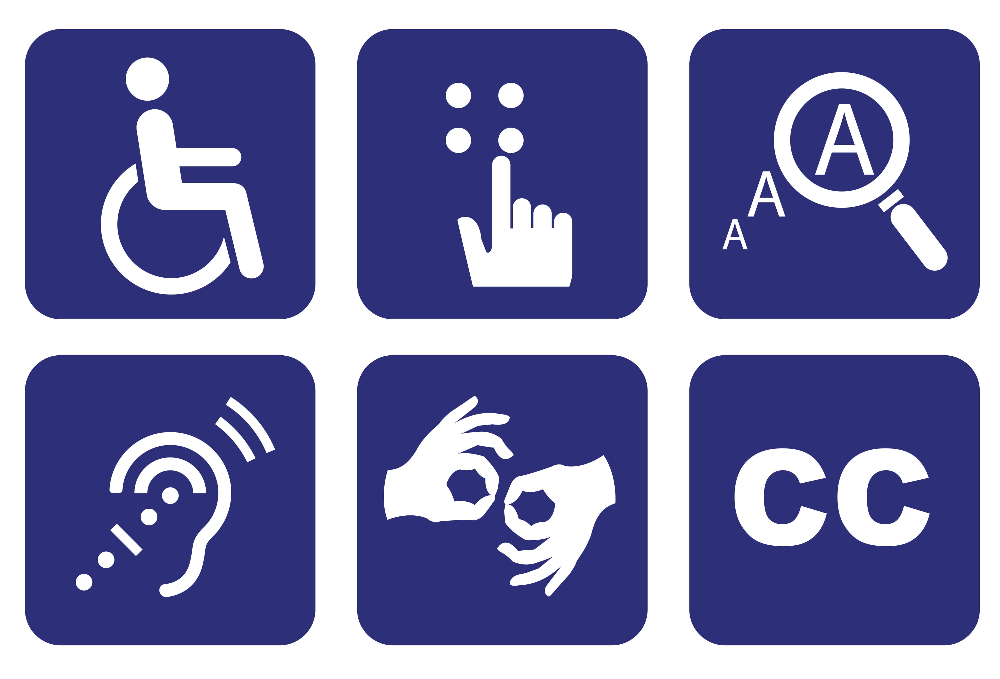

Ir para o conteúdo [1]
Ir para o menu de navegação [2]
Ir para o rodepé [3]
Acessibilidade
Contraste
Sem Contraste
Início
Página 2
PRÁTICA DE USABILIDADE
Esta é a página inicial da prática de usabilidade.
